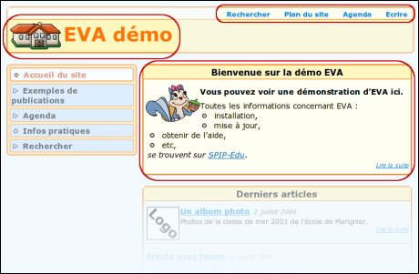

Outre le fait que la page d'accueil et les différents
sommaires de rubriques se réactualisent en fonction des publications,
on peut aussi modifier quelques éléments statiques.

Remarque : seuls les administrateurs du site pourront procéder
à ces personnalisations.